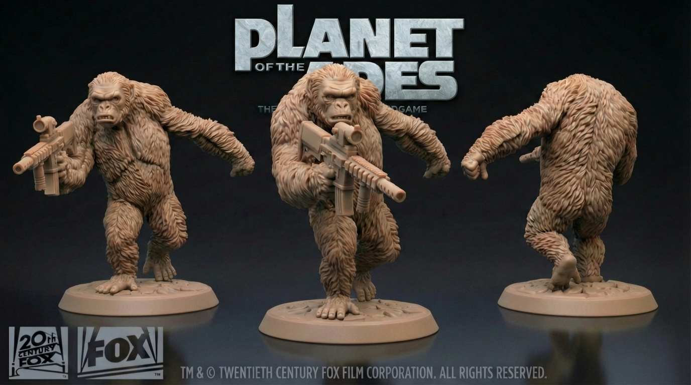

Figurine Sculpting • Character Art • ZBrush • Production Workflow

I created all the miniatures for this board game, including approximately 60 characters, featuring both apes and soldiers. All characters were designed using official references provided by 20th Century Fox and Weta Digital, ensuring strict fidelity to the cinematic universe. All miniatures were fully validated by 20th Century Fox and approved by Disney.
The study of poses, body language, and dynamic silhouettes was crucial to conveying motion and intensity at a tabletop scale. Each piece was meticulously sculpted in ZBrush to balance artistic detail with technical reliability for mass production.
The main challenge was readability at 3.5cm height. By optimizing silhouettes and accentuating key features, I maintained recognizable character likeness while ensuring every miniature remained clear and impactful during gameplay.